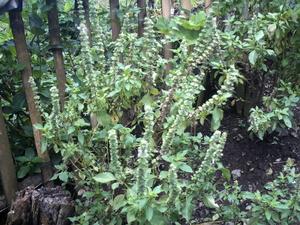

bawing 
/bawiŋ/
n.
“lemon_grass”
n.
Ocimum_basilicum
grand basilic; sweet basil
Egkeupian a ne egkeen te gulay ke eg-amutan te bawing.
I would like to eat vegetables if it's adding with a lemon grass.
Cult. an herb, the leaves of which are used for flavoring stews. The tiny seed is often placed in the eye to encourage the flow of tears in order to wash out a foreign object.
cf. leggù
Eng. grand basilic; sweet basil; fragrant grass; lemon grass; grass, lemon; herb
Tag. albanaka
Ceb. kamangi; tanglad
OCM: Flora (137)
DDP: Grass, herb, vine (1.5.3)
Online dict status: -
Usage level: M
Updated by: RJH,AAA,QDL
Last updated: 17/Sep/2009
This page last updated: 03-Jan-2020
Copyright © 2009-2014, Matigsalug Language Christian Association, Inc